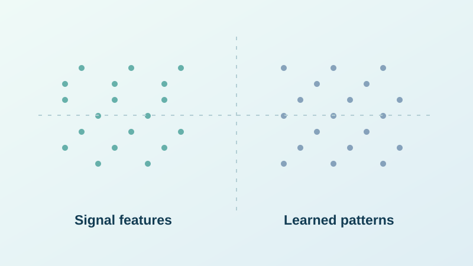
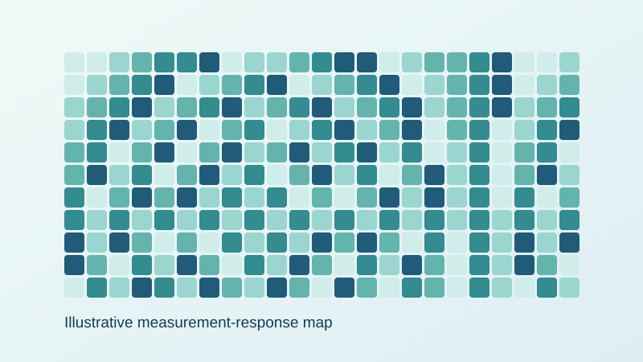

Turning complex signals into useful insights.
Hi, I'm Your Name. My work focuses on machine learning, signal processing, and experimental high-frequency communication systems. Explore selected projects and the methods behind them.
Featured projects
A collection of research and applied engineering projects, covering the problem, technical approach, and experimental or numerical evaluation.

Automatic Modulation Recognition
Learning to identify modulation formats from received signals in coherent and non-coherent communication systems.
Explore project ↗
Nonlinearity Compensation
Investigating how to mitigate strong nonlinear distortion in high-frequency communication links.
Explore project ↗
ML-Based Frequency Estimation
Estimating high-frequency signals using data-driven processing of measurement patterns.
Explore project ↗
Direction-of-Arrival Estimation
Exploring estimation of signal arrival direction using frequency-dependent antenna responses.
Explore project ↗About
I'm an electrical engineering researcher working at the intersection of machine learning and signal processing, with a focus on communication systems and real measured data.
Areas of interest
Deep learning · Statistical signal processing · Nonlinear equalisation · Numerical modelling · Experimental validation · Python · MATLAB
Update this section with your preferred professional summary, publications and CV link.
Let's connect
Replace the placeholder links below with your own public details before publishing.